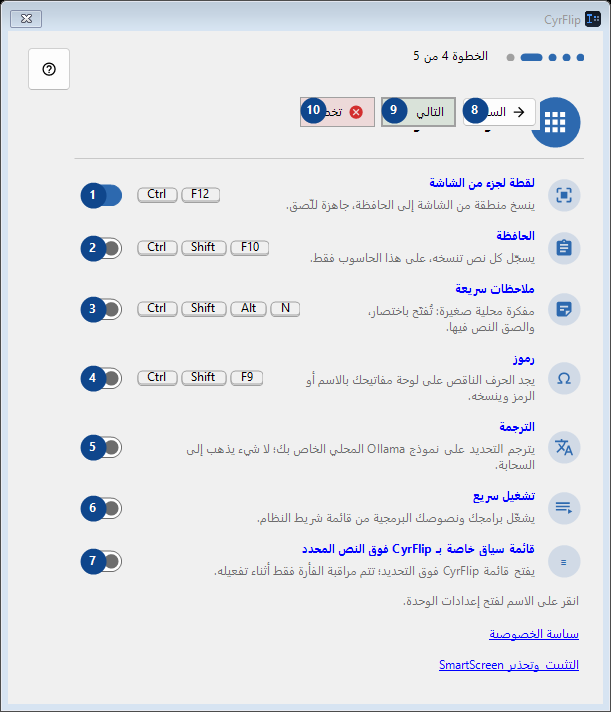
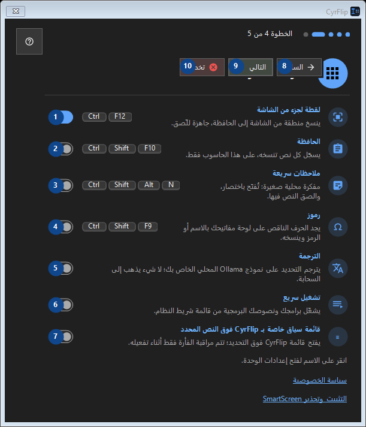

ميزات اختيارية
الغرض
اقرأ الشروح المرقمة واختر القيم المطلوبة ثم تابع باستخدام أمر النافذة.


ترتيب الاستخدام
اقرأ الشروح المرقمة واختر القيم المطلوبة ثم تابع باستخدام أمر النافذة.
العناصر
1. لقطة لجزء من الشاشة
مفعّل
اختصاراتك2. الحافظة
معطّل
اختصاراتك3. ملاحظات سريعة
معطّل
اختصاراتك4. رموز
معطّل
اختصاراتك5. الترجمة
معطّل
اختصاراتك6. تشغيل سريع
معطّل
اختصاراتك7. قائمة سياق خاصة بـ CyrFlip فوق النص المحدد
معطّل
اختصاراتك8. السابق
استخدم هذا الأمر لتنفيذ الإجراء المذكور. اقرأ أي طلب تأكيد قبل الموافقة.
اختصاراتك9. التالي
استخدم هذا الأمر لتنفيذ الإجراء المذكور. اقرأ أي طلب تأكيد قبل الموافقة.
اختصاراتك10. تخطي
استخدم هذا الأمر لتنفيذ الإجراء المذكور. اقرأ أي طلب تأكيد قبل الموافقة.
اختصاراتك